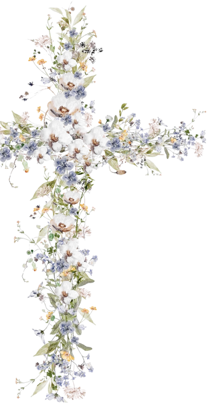
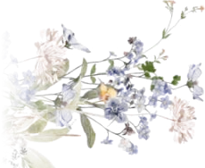

Ceremonia religiosa
12:00 h
Exconvento de Santa María Magdalena
Av. Libertad Sur 101, Centro
San Martín Texmelucan, Puebla
Sábado 28 de noviembre de 2026
Llega a las 11:45 h: empezamos puntuales.

Con todo nuestro cariño
28 de noviembre de 2026
Leer nuestro mensajeAcompáñanos a celebrar el
Sábado 28 de noviembre de 2026
12:00 h · San Martín Texmelucan
Confirma a más tardar el viernes 20 de noviembre.

¡Gracias!
Con cariño,
Viridiana y Guillermo
Buscando tu invitación…
¡Ya confirmaron!
Su mesa es la
en la recepción, Jardín Casa Pelayo
Si quieres, también puedes dejar un pedacito de este día:
Puedes modificarlos hasta el viernes 20 de noviembre.
¿Necesitas cambiar algo? Escríbenos por WhatsApp.
La ceremonia comienza puntualmente a las 12:00 h. Te recomendamos encarecidamente llegar al menos 15 minutos antes (a las 11:45 h).
Ceremonia religiosa
12:00 h
Av. Libertad Sur 101, Centro
San Martín Texmelucan, Puebla
Sábado 28 de noviembre de 2026
Llega a las 11:45 h: empezamos puntuales.
Recepción
13:00 h
San Martín Texmelucan, Puebla
Al terminar la ceremonia
Te recomendamos dejar tu coche en el estacionamiento de Plaza La Estación (de pago), a la vuelta de la iglesia.
La ceremonia comienza puntualmente a las 12:00 h. Te recomendamos encarecidamente llegar al menos 15 minutos antes (a las 11:45 h).

Ceremonia · 12:00 h
Exconvento de Santa María Magdalena
Av. Libertad Sur 101, Centro
Estacionamiento
Gran Plaza La Estación
De pago · a la vuelta de la iglesia
Recepción · 13:00 h
Jardín Casa Pelayo
San Martín Texmelucan
Mapa interactivo: © colaboradores de OpenStreetMap
Mis padres
Viridiana Sebrango Jaramillo
Guillermo Pelayo Olmos
Mis padrinos
Gladys Ovilla López
Jesús Alberto García Navarro
Guardaremos sus mensajes para que los lea cuando sea grande.
Escríbele una carta a José María para cuando cumpla 18 años. La guardaremos cerrada hasta el 2044.
Carta guardada
Gracias. José María la leerá cuando cumpla 18 años.